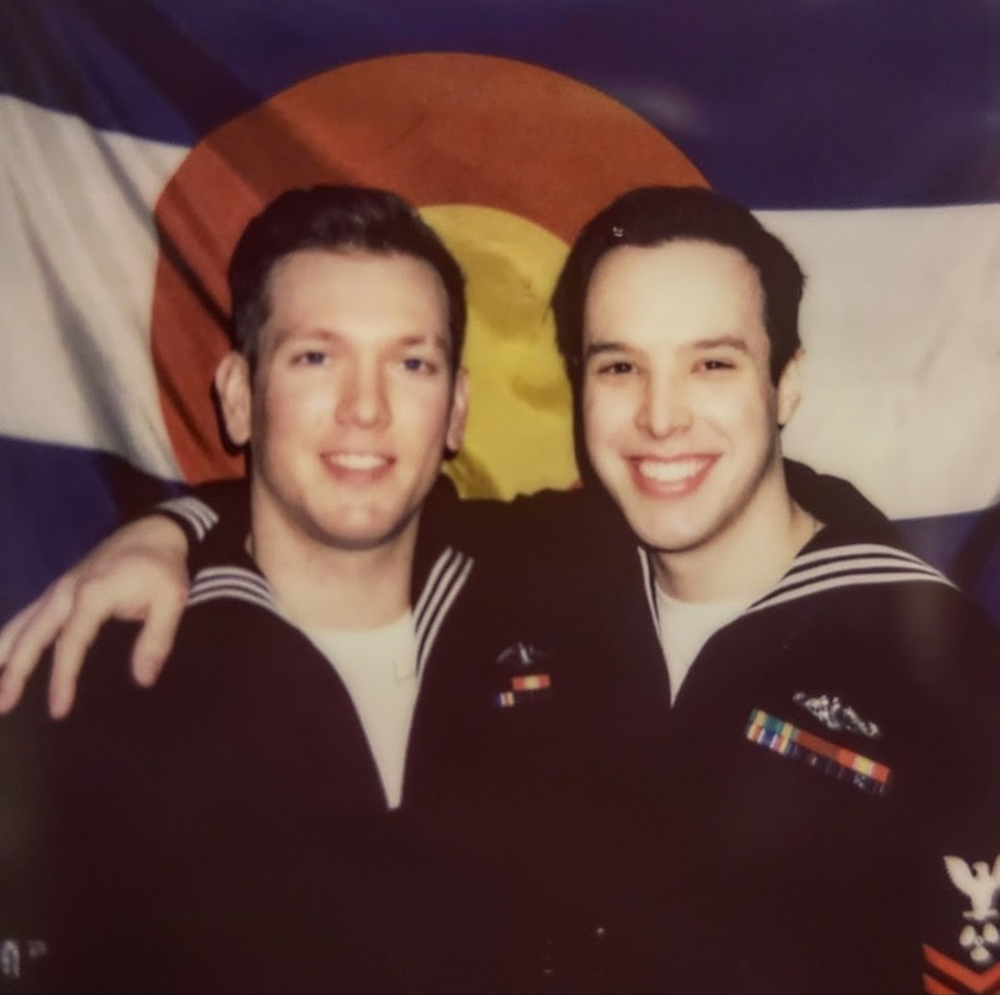
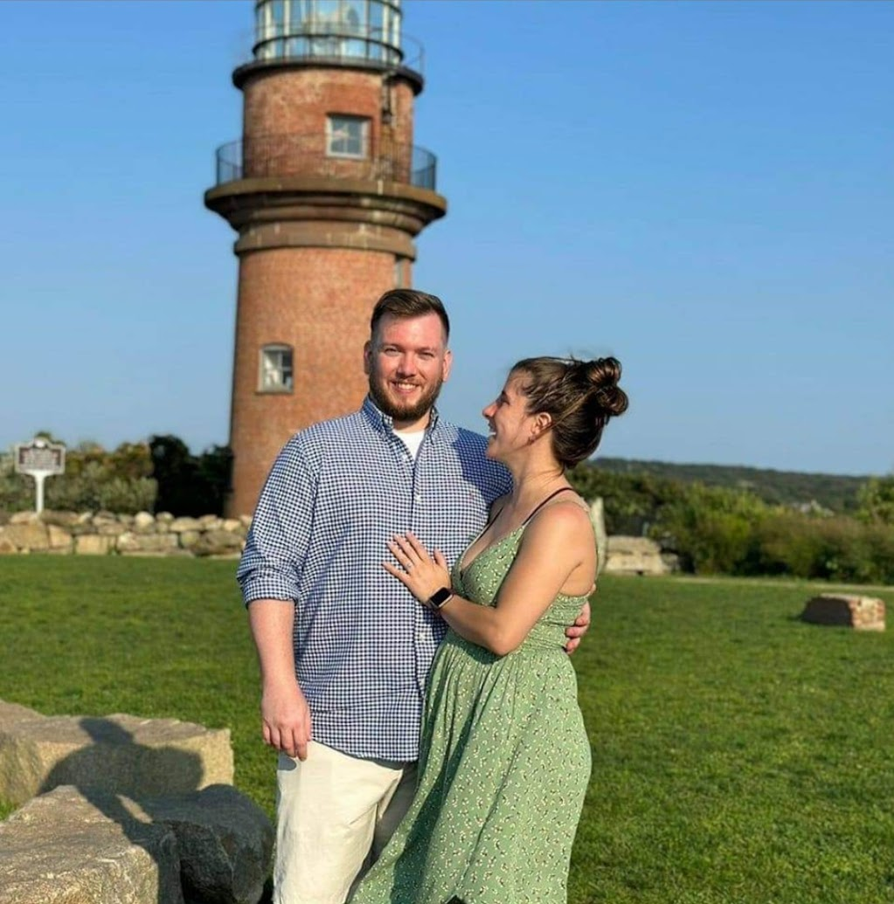
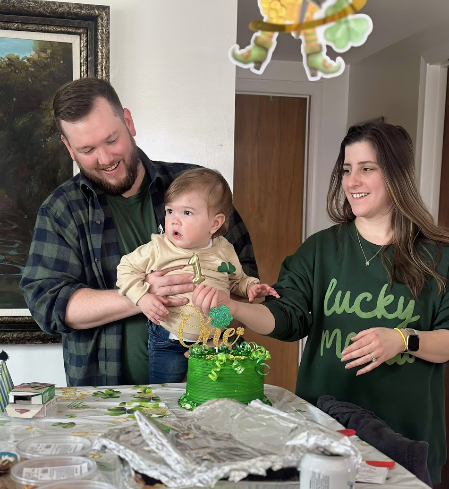
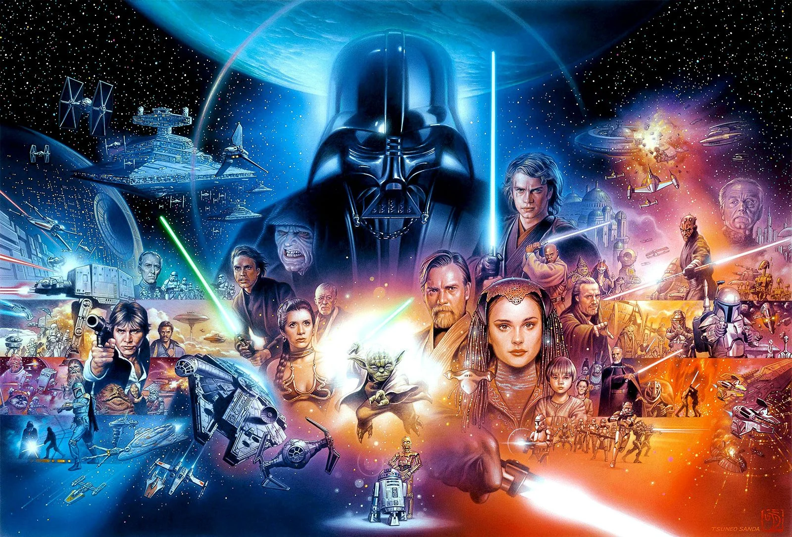
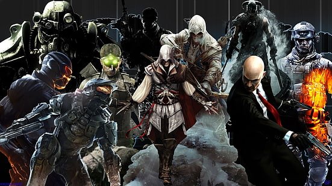

A little about my adventure, my family, and the things I enjoy.



My name is Dylan Osborn. I enjoy spending time with my son, Travis, and my fiancee, Nicole. I enjoy playing video games, playing and watching sports, and relaxing with a nice glass of bourbon. I served on the USS Colorado SSN-788 as a Torpedoman. I completed two EUCOM deployments and decided to end my career in the Navy for some much needed air and a new calling in the civilian world. After my time in the submarine force, I came to New England Tech to build a career in technology and keep moving forward.
Some of my favorite hobbies are gaming, sports, movies, and spending time with my family. I have always enjoyed adventure, science fiction, and action games.


Star Wars is one of my favorite franchises, and gaming has always been a huge hobby of mine. I also enjoy sci-fi and adventure movies, especially Indiana Jones and all things Star Wars.
Click the Indiana Jones poster below to visit IMDb's Top Movies list.